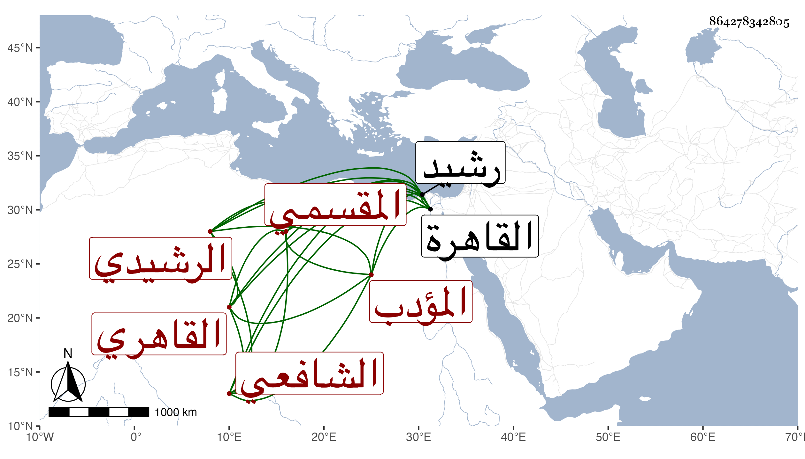

0902Sakhawi.DawLamic.ITO20230111-ara1.EIS1600.864278342805
Biography ID: 864278342805
697
محمد بن صلاح بن عبد الرحمن الشمس ويلقب قديما ناصر الدين الرشيدي الأصل نسبة لسفط رشيد بالصعيد الأدنى القاهري المقسمي لسكناه المقسم الشافعي المؤدب ويعرف بابن أنس . ولد في مستهل ربيع الأول سنة خمس وستين وسبعمائة بالقاهرة ونشأ بها فحفظ القرآن وتلاه في كبره للسبع ما عدا حمزة ونافعا على النور أبي عبد القادر الأزهري وقبله لابن كثير وأبي عمرو على الحكري ولعاصم والكسائي على يعقوب الجوشني ، واشتغل في الفقه على الابناسي ثم البيجوري والبدر القويسني وفي النحو على الحناوي ، وسمع على عبد الله وعبد الرحمن ابني الرشيدي الشافعيين وأبي العباس أحمد بن علي بن الظريف والنجم إسحق الدجوي المالكيين قطعة من أبي داود وعلى الفرسيسي معظم السيرة لابن سيد الناس وعلى ابن أبي المجد الصحيح بفوت يسير والختم منه على التنوخي والعراقي والهيثمي وعلى الشرف بن الكويك معظم مسلم مع سماعه من لفظه للمسلسل وكذا سمع على البلقيني والقويسني والشمس البرماوي والجمال الكازروني والشهاب البطائحي وقاري الهداية في آخرين وتكسب بالشهادة وبتأديب الأطفال أم ببعض المساجد وخطب بجامع الزاهد الشهير ، وكان خيرا مفيدا على الهمة لا ينفك عن كتابة الإملاء عن شيخنا مع شيخوخته وضعف حركته ، وقد حدث باليسير سمع منه الفضلاء قرأت عليه ثلاثيات البخاري . ومات في يوم الأحد حادي عشري ربيع الآخر سنة خمس وخمسين رحمه الله وإيانا .
